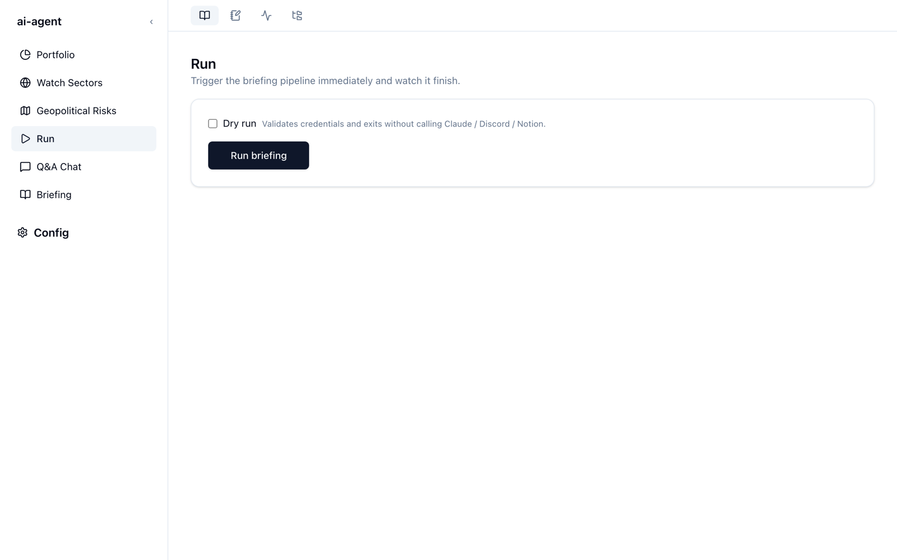

ブリーフィングを生成する（Run）
Run 画面の Run briefing を押すと、その場で当日のブリーフィングを生成します。生成には数分かかりますが、別の画面に移っても処理は続きます。

使い方
- Briefing サービスのサイドバーで Run を開きます。
- Run briefing を押します。ボタンが Running… に変わり、下に Status（
pending→running→done）と開始・終了時刻が表示されます。 doneになったら、Briefing 画面に新しいファイルが並びます。
生成中はサイドバーの Run の横に点が付きます。画面を移ってもジョブは止まらず、戻ると進み具合が表示されます。
ドライラン
Dry run にチェックを入れて実行すると、認証情報の確認だけを行って終了します。Claude・Discord・Notion はどれも呼び出さないので、利用枠を消費せずに設定を確かめられます。結果には dry_run の印が付きます。
生成の流れ
1 回の生成で、次のことが順に起きます。
- 市況データの収集 — 保有銘柄とウォッチ銘柄の前日比を yfinance から取得します。
- 並列生成 — セクションごとのプロンプトを組み立て、Claude を並列に呼び出します。最新のニュースは Claude Code の WebSearch で調べます。外部のニュース API は使いません。
- ローカルに保存 —
output/briefing/briefing_YYYY-MM-DD.mdに書き出します。Discord や Notion が落ちていても生成物を失わないよう、配信より先にディスクへ保存します。 - 配信 — Discord と Notion の認証情報があれば、それぞれに配信します。片方が失敗しても、もう片方は届きます。
- 記録 — 使ったトークン量とコストを記録します。Config → Usage で確認できます。
一部が失敗しても、ブリーフィングは届きます。
セクター調査など一部の生成が失敗しても、残りの部分でブリーフィングを完成させて配信します（デグレードモード）。失敗した部分は本文に注記されます。
時間と利用枠
生成は Web 検索を何度も行うため、数分かかることがあります。途中で進み具合が止まって見えても、多くの場合は検索の応答を待っているだけです。途中で止めると、それまでに使った利用枠は戻らないうえ、もう一度最初からやり直すことになります。
Claude Pro / Max プランで使う場合、料金は定額ですが、プランの利用上限の一部を使います。1 回あたりの目安は Monitor と Usage で確認できます。
毎朝自動で生成したいとき
Run 画面は手動で実行するためのものです。毎朝決まった時刻に生成するには、リポジトリを clone した環境で launchd や cron を設定します。ノート PC で使う場合の注意点も含めて、ソースから使う・毎日の運用にまとめています。